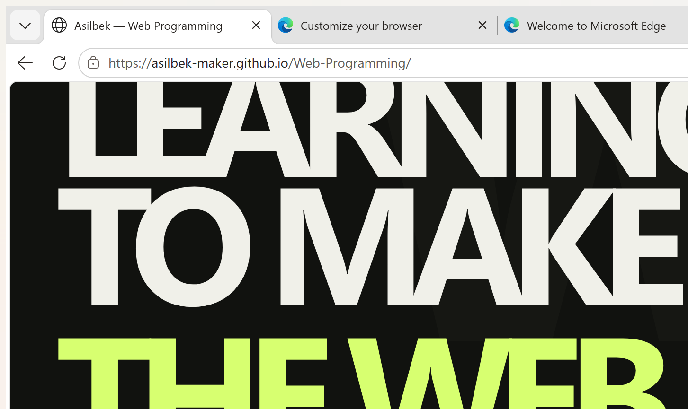

Web Programming · Week 9
Week 9_1 — Lighthouse Accessibility Report
Lighthouse Accessibility audit of my course portfolio, with the published page URL and before-and-after evidence.
Page audited
These Lighthouse reports were run against the course homepage. Open the published page to verify the address being audited:
https://asilbek-maker.github.io/Web-Programming/
The existing Lighthouse report captures show the local preview address in their browser bar. The live-page capture below records the published URL separately.
Audit results
Initial Accessibility score: 95/100

Final Accessibility score: 100/100

Published page URL capture

Three accessibility fixes
- Improved the week-number text contrast from 3.74:1 to 5.72:1.
- Improved the week-description text contrast from 4.18:1 to 5.72:1. Lighthouse flagged 14 text instances across both colors; all are fixed.
- Added a keyboard-accessible “Skip to main content” link and a focusable main-content target. Tested it with Tab and Enter.
Lighthouse reported one failing audit (color contrast), with 14 affected text instances. All reported contrast failures are fixed; the Accessibility score is now 100.